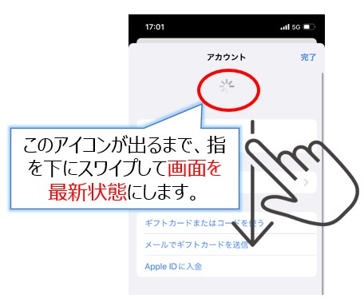

よくある質問
パスワードを忘れた
初期パスワードは、生年月日8桁となります。
(例：1986年1月2日生まれの場合は「19860102」)
自身が設定したパスワードを忘れた場合はパスワードを初期化して下さい。
プッシュ通知が届かない
こちらを参照ください。
グループを作成したい
通常ユーザーは1対1のコンタクトはとれますが、グループを作成する事が出来ません。
権限があるユーザーのみ、3人以上からなるグループを作成できます。
グループ作成権限は、管理者が付与する事が出来ます。
iOSでアプリのアップデートができない
アカウント画面で必ず「画面を最新状態」にしてからアプリのアップデートをお試しください。
アップデート/インストールをご確認ください。

iOSインストール時に「コードを使用できません」が表示される
下記のようなエラーが発生した場合は、QRコードが既に使われてる場合があります。
ユーザー一覧画面を表示できる管理者はQRコードを初期化する事ができます。管理者に連絡して初期化して頂いて下さい。

アプリを消してしまった、再インストールしたい
iOSのみ再インストール方法が通常アプリと異なるので、アップデート/インストールの再インストール方法をご確認ください。
Androidは通常アプリと同じ様にGooglePlayから再インストール出来ます。
iOSでファミリー共有している場合にChatisが表示できない
ファミリー共有をしており、管理者以外でログインしている場合、Chatisをインストールするとダウンロードはされるがアプリが表示されません。
管理者でAppStoreにログインするとアプリが表示されるようになります。
他の施設のユーザーとグループを作成したい
こちらを参照ください。
ログインが出来ない
以下の原因が考えられます。
1.ログイン情報が間違っている
ログインURLが「https://chat-tis.com」になっているか確認お願いします。
「http」では無く正しく「https」になっているか確認お願いします。
2.IDが作成されていない
退職した場合や、入職処理が正しく行われていない方の場合、人事システムと連動しているため、ログインが出来ない場合が御座います。IDが存在するか管理者に確認お願いします。
3.ログインの許可がされていない
IDが作成されていても、何かしらの原因でログインが出来ない状態になっている場合が御座います。ログインができる状態か管理者に確認お願いします。